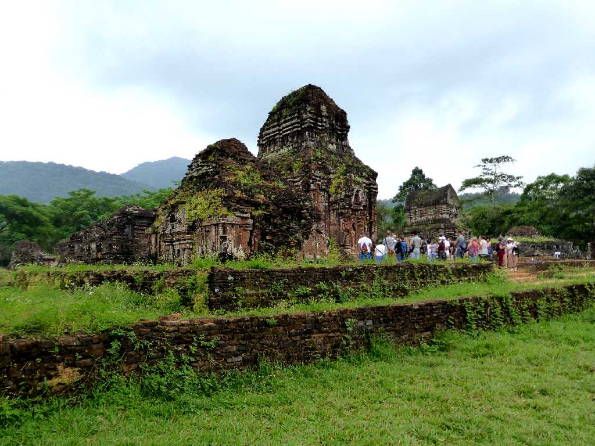
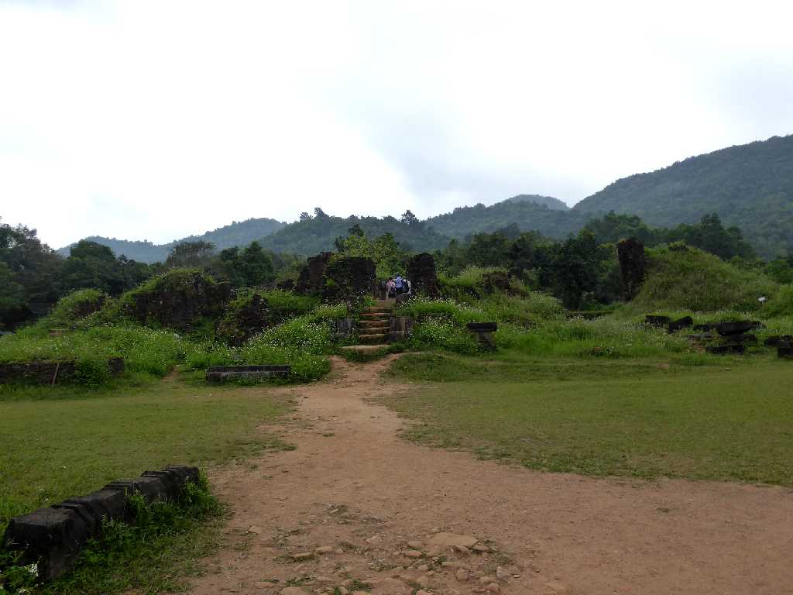
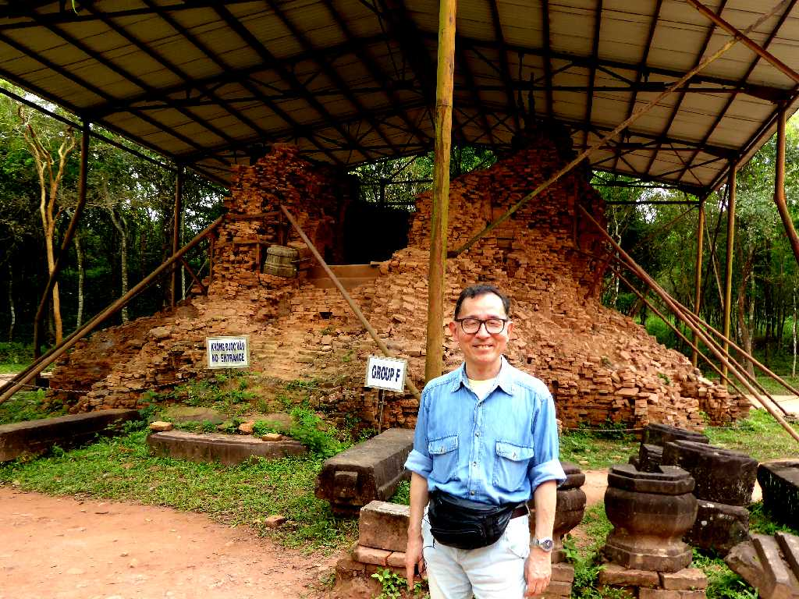
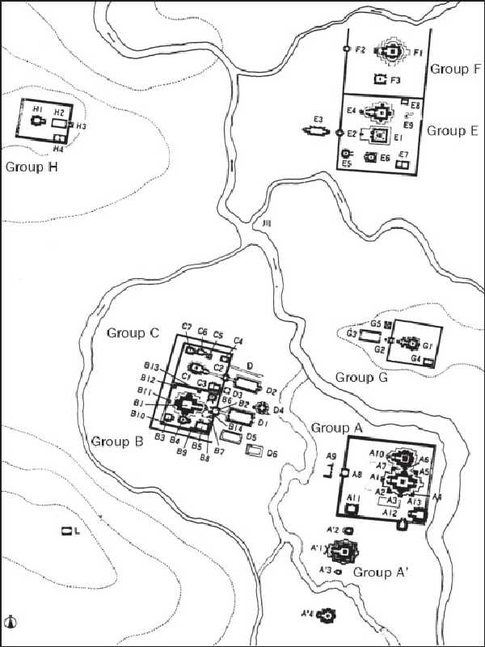

Group B C D (11-13th century) Thánh địa Mỹ Sơn
１９２年から１８３２年にベトナム中部で栄えたチャンパ王国の宗教であるヒンドゥー教シヴァ派の寺院が多く残るミ－ソンは聖域であったと考えられ７世紀から１３世紀に創られたミーソン聖域遺跡群として観ることができる

Group A (9-10th century) Thánh địa Mỹ Sơn
２０世紀初頭に最初に発見されたグループＡ遺跡群は９～１０世紀頃に創られた寺院が観られる (ABC・・・は発見順)

March 30 2018 Group E F (7-8th century) Thánh địa Mỹ Sơn
グループＥＦの遺跡群は７～８世紀頃に創られた初期の寺院遺跡群でこの時期以前は木造であったと考えられている
